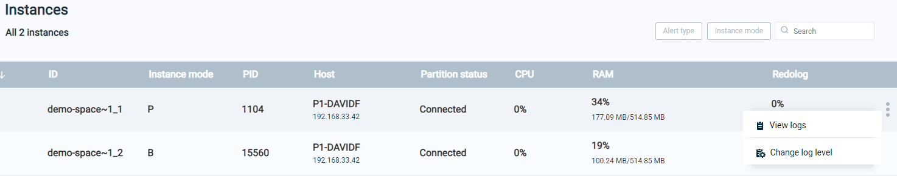
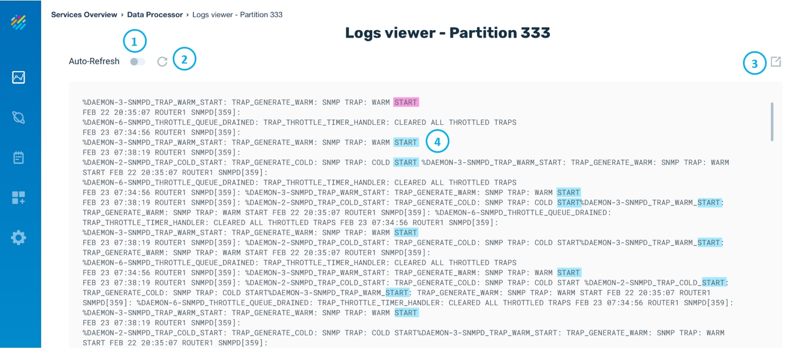
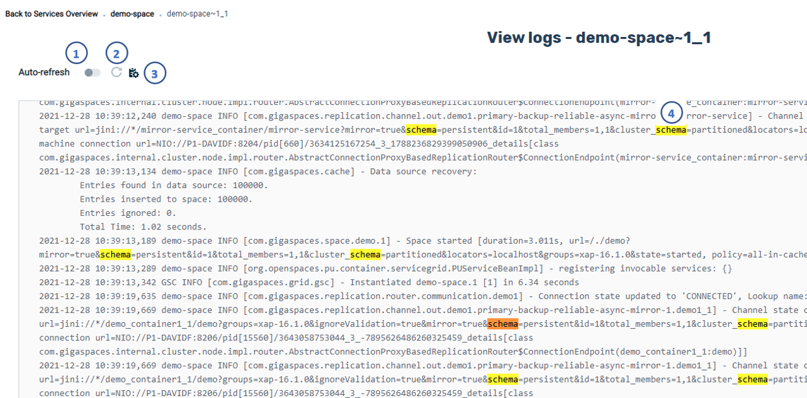

Viewing Partition Log Files with Ops Manager
A log file is available with detailed information about each partition.
To view the log file for a partition, click on View Logs on the menu that appears when hovering over the three dots on one of the partition instances:

This displays the log for the partition:


The log entries are displayed in chronological order, with the most recent entries at the top of the listing.
Note the numbered items indicated in the example above:
- If Auto-Refresh is off (default), the log is not refreshed. Auto-Refresh on causes the log to be dynamically refreshed as new entries are generated.
- When Auto-Refresh is off, click here to refresh the log.
- Click here to download the log file manually.
- Using the browser's built-in Find capability, you can search for text in the log.
- If Auto-Refresh is off (default), the log is not refreshed. Auto-Refresh on causes the log to be dynamically refreshed as new entries are generated.
- When Auto-Refresh is off, click here to refresh the log.
- Click here to change the log level.
- Using the browser's built-in Find capability, you can search for text in the log.